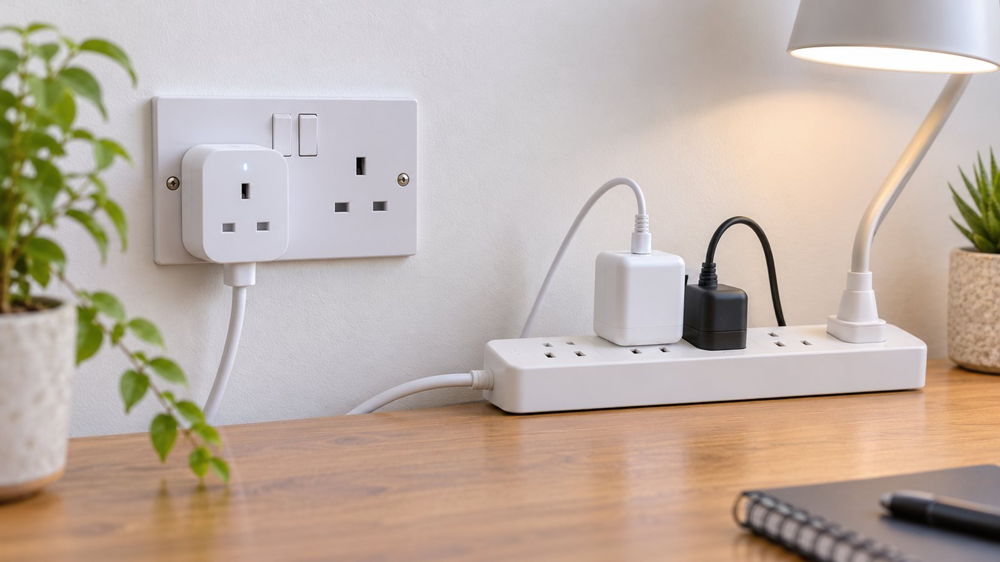
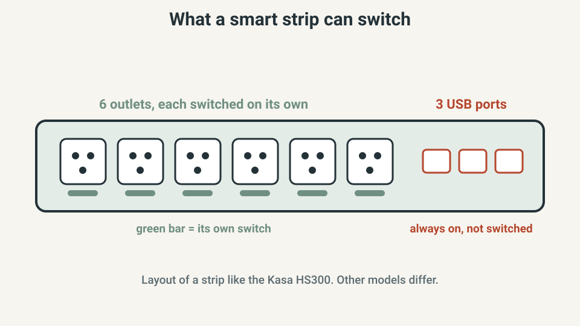
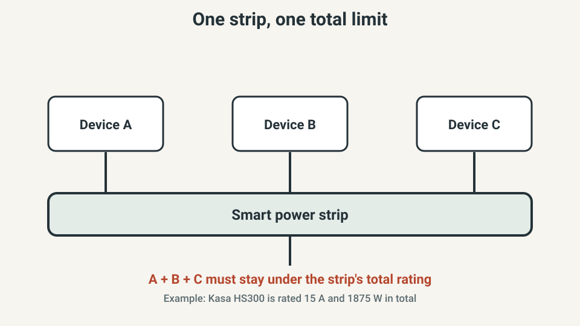
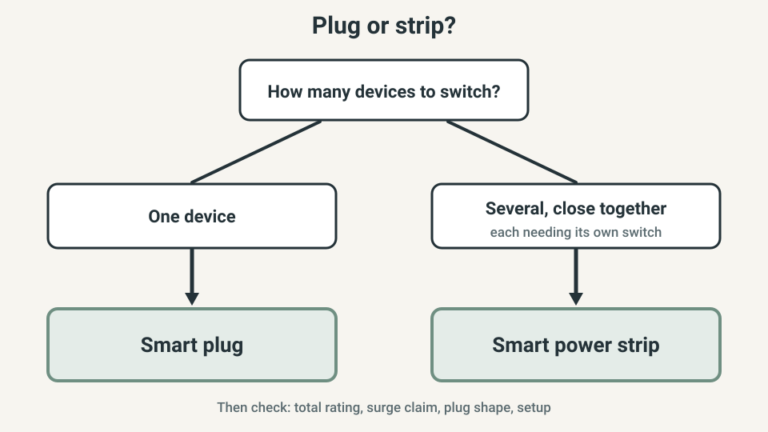

SMART HOME · SMART PLUGS
Smart Plug or Smart Power Strip: Which Should You Buy?

You have a lamp, a fan and a charger you want to automate. Do you buy three smart plugs, or one smart power strip? It comes down to four things: how many outlets need their own switching, the strip's total load rating, whether it claims surge protection, and whether it fits your wall and your plugs. I use real product specs as examples, for the US and the UK. I am not an electrician.
The quick answer
Buy a smart plug to control one device, and a smart power strip when several devices sit together and need their own switching.
- Count what you want to switch separately. One device means a plug. Three or four devices in one corner means a strip is worth a look.
- Read the total rating, not the outlet count. Six outlets do not mean six times the power. The Kasa HS300 is rated 15 A and 1875 W in total.
- Do not assume surge protection. It is a separate feature, so look for an explicit claim.
- Check the shape. A long strip can crowd a socket or a desk edge.
- Check the setup. Hub, app, Wi-Fi band and region all vary by model.
Quick plan
| Item | Detail |
|---|---|
| Time | About 10 minutes to compare two product pages. That is my estimate |
| Cost | Real prices change often, so I use an invented example below. Compare the price per switched outlet |
| Best for | Anyone choosing between several smart plugs and one strip |
| Goal | Buy the right format, once, and stay inside its rating |
What each one actually is
A smart plug sits between a wall socket and one appliance and gives it an on and off switch you can reach from an app. A smart power strip is a multi-outlet bar with one plug into the wall. Some strips switch every outlet on its own, some switch them in groups, and some leave a few always on.
Three real examples show how different they can be. TP-Link's Kasa HS300 has six outlets, each individually controlled, plus three USB ports. Its Tapo P304M, listed by the UK network EE, has four sockets that can be switched independently, with per-outlet energy monitoring. TP-Link's Tapo P300 is a three-outlet strip. These are examples of what is out there, not recommendations.
Switched outlets and always-on outlets

TP-Link's HS300 datasheet describes "independent control of 6 smart outlets and always-on USB ports to charge 3 others". So you can turn off a lamp at night while a phone keeps charging. That is the real advantage of a strip over a single plug: one device does several jobs.
The catch is that "smart" often covers only part of the strip. Before you buy, check which outlets switch, which are grouped and which are always on. With single plugs you never have to wonder, because each plug is one switch.
The rating that matters: the whole strip

This is the part people miss. A single plug has its own limit, and so does a strip, but the strip's limit is for everything on it together. The HS300 datasheet gives its rating as 125 V, 60 Hz, 15 A, 1875 W maximum. TP-Link's HS300 FAQ says 15 A is the maximum load or the built-in resettable circuit breaker will keep tripping.
Add up the watts on the labels of what you plan to connect and compare the total with the strip's number. Do the same sum for a plug. A strip does not add capacity to the wall circuit. It only gives you more places to plug in.
Same name, different numbers. Ratings vary by region even for one product line. TP-Link's Australian datasheet for the Tapo P300 lists 2,400 W and 10 A, and notes that at 230 V the maximum is 2,300 W. Its Nordic page lists 2,300 W and 10 A. So always read the figure for the version you are actually buying.
Surge protection is a separate feature
A strip is not automatically a surge protector. In the comparison table on TP-Link's HS300 page, the surge protection tick sits only under the 6-outlet strip, not under its single plugs or its 2-outlet plug. That is how TP-Link presents its own range.
For the HS300, the datasheet lists ETL-certified surge protection with a VPR of 500 V (Type 3 SPD). TP-Link's FAQ explains that VPR is the highest voltage allowed through during a spike, and that a lower number usually means better protection. The datasheet says this protects against surges and overload. A different model may show a different figure, so compare like with like.
The Tapo P304M listing says it has built-in surge protection and an overload cut-off. If you want protection for a TV or a computer, look for that claim in writing. If a page never mentions it, treat it as not included.
Space, plug shape and the neighbour problem
The HS300 measures 14.2 by 2.5 by 1.5 inches (360 by 63.3 by 37.5 mm). It is a long bar, so check that it fits behind your desk or TV unit. TP-Link says the design leaves other outlets free and fits behind furniture. The Tapo P304M is listed at 260 by 62.7 by 31.4 mm.
A strip can also solve the other problem: a big adapter on a single plug that blocks the second wall socket. That is one place a strip wins. But a bulky power brick can still cover its neighbour on the strip, so look at the spacing in the product photos before you buy. That last point is my advice.
Apps, hubs and accounts
The HS300 datasheet says no hub is required, that it connects to a secured home Wi-Fi network on 2.4 GHz, and that it works with the Kasa app and with Alexa and Google Assistant. The Tapo P304M listing says it is Matter 1.3 certified and works with Apple Home, Alexa, Google Home and SmartThings, and that it connects over 2.4 GHz Wi-Fi.
These are manufacturer claims for specific models, so check yours. They do not tell you what still works when your internet drops. For that, see our Wi-Fi outage test.
What each costs per switched outlet
Compare the price per outlet you can actually switch on its own. Do not count always-on USB ports.
Example only, with invented prices. If one smart plug costs $12, four of them cost $48, or $12 per switched outlet. If a strip with four switched outlets costs $40, that is $40 ÷ 4 = $10 per switched outlet. These prices are made up to show the arithmetic. Check real prices on the day you buy, and add anything extra such as a hub.
If you also want to measure what a device uses, see our power meter guide. Both the HS300 and the P304M list energy monitoring.
Safety: do not chain, do not overload
- Plug it straight into the wall. TP-Link's HS300 FAQ says the strip must go directly into a grounded outlet, and that daisy-chaining power strips, surge protectors or UPS units is prohibited by safety standards and codes, which can void the warranty and may affect insurance.
- UK: one extension per socket. Electrical Safety First says to use only one extension lead per socket and never plug one into another. I saw this advice reproduced on a Northern Ireland health site, not on the Electrical Safety First page itself.
- Stay under the total. If the breaker on the HS300 trips, TP-Link says to unplug everything and check the rating of each device.
- Indoors only. TP-Link lists the HS300 as indoor use only, and its Tapo P300 datasheet says not to use it in damp places or outdoors.
- Motors and heaters. Check the strip's motor rating. TP-Link lists the P304M with a 1 HP motor and says nothing about heaters. Heat makers are covered in our smart plug guide.
- Stop if it overheats. A plug or strip that is hot, smells burnt or sparks should come out of use. Ask an electrician if a wall socket is damaged. That is my rule.
US and UK: same idea, different specs
| Example | Region | Rating from the manufacturer |
|---|---|---|
| Kasa HS300 (6 outlets) | US | 125 V, 15 A, 1875 W maximum in total (datasheet) |
| Tapo P304M (4 sockets) | UK | 250 V, 3250 W, 13 A, 1 HP motor (EE listing of the specs) |
| Tapo P300 (3 outlets) | Australia / Nordic | 2,400 W and 10 A (AU datasheet); 2,300 W and 10 A (Nordic page) |
US and UK plugs are not interchangeable, so buy the regional model. I did not find a UK strip rated on the manufacturer's own page for this guide, so the UK row comes from a retailer listing of TP-Link's specs. Treat it as an example.
Which one should you choose?

| Your situation | Better fit | Check |
|---|---|---|
| One lamp or small appliance | Smart plug | Its own rating and size |
| Several devices in one corner | Smart power strip | Switched or always-on outlets, total rating |
| You need some outlets always on | Strip with always-on ports, or a plug plus a normal socket | Which outlets are switched |
| Surge protection matters | A model that claims it in writing | VPR or the stated standard |
| Big adapters block neighbours | Separate plugs, or a widely spaced strip | Photos and dimensions |
| You are in the UK | A UK-region model | Plug type, voltage, 13 A rating |
My rule of thumb: buy for the number of outlets you really need to switch separately. One device is a plug. A desk setup with four is probably a strip.
Frequently asked questions
Can every outlet on a smart power strip be switched separately?
Not on every model. TP-Link's Kasa HS300 gives each of its six outlets its own control, but its three USB ports are always on. Other strips group outlets or leave some permanently powered, so read the product page for the exact model.
Does every smart power strip have surge protection?
No. In the comparison table on TP-Link's HS300 page, the surge protection tick sits only under the 6-outlet strip, not under its smart plugs. If surge protection matters to you, look for an explicit claim and a rating. TP-Link's HS300 FAQ says a lower voltage protection rating usually means better protection.
Does a smart power strip give me more power than a smart plug?
No. The wall circuit stays the same. The Kasa HS300 is rated at 15 A and 1875 W in total, so all six outlets share that. The Tapo P304M sold in the UK is listed at 3250 W and 13 A, again for the whole strip.
Can I plug a smart power strip into another strip or an extension lead?
Do not. TP-Link's HS300 FAQ says the strip must be plugged directly into a grounded outlet, and that daisy-chaining strips, surge protectors or UPS units is prohibited by safety standards and codes. In the UK, Electrical Safety First advises one extension lead per socket and never plugging one into another.
Are the ratings different in the UK and the US?
Yes, and sometimes within one product family. The Kasa HS300 is a 125 V, 15 A US model. The Tapo P304M listing for the UK says 250 V and 13 A. TP-Link lists the Tapo P300 at 2,400 W and 10 A in its Australian datasheet and 2,300 W and 10 A on its Nordic page. Always read the rating for your region's model.
Can I use a smart power strip for a space heater?
I would not. Heaters draw a lot of power, and our smart plug guide covers why they belong on a normal wall socket. A strip adds another connection and shares its total rating with everything else.
Keep going
- What can you safely plug into a smart plug?
- Power meter or energy-monitoring smart plug: which to buy?
- Smart bulb or smart switch? How to choose
Sources and further reading
- TP-Link, Kasa HS300 Smart Wi-Fi Power Strip datasheet (US): TP-Link HS300 datasheet (PDF)
- TP-Link, common questions about the HS300 (breaker, no daisy-chaining, VPR): tapo.com HS300 FAQ
- EE (UK), TP-Link Tapo P304M Smart Power Strip listing with manufacturer specifications: ee.co.uk Tapo P304M
- TP-Link, Tapo P300 datasheet (Australia): Tapo P300 datasheet (PDF)
- TP-Link, Tapo P300 (Nordic) page: tp-link.com Tapo P300 Nordic
- TP-Link, Kasa HS300 product page with the range comparison table: tp-link.com HS300
- Electrical Safety First, socket safety (UK), as reproduced by the Northern Ireland health site: healthwell.eani.org.uk socket safety
Last reviewed: November 27, 2026. Every rating here is a manufacturer figure for a specific model and region, and none is a general rule. The comparison table, the P300 figures and the Electrical Safety First advice came from search extracts of those pages, not from pages I read in full. I did not verify a UK strip on a manufacturer page, and I give no ranking or buying pick. This is not electrical advice.